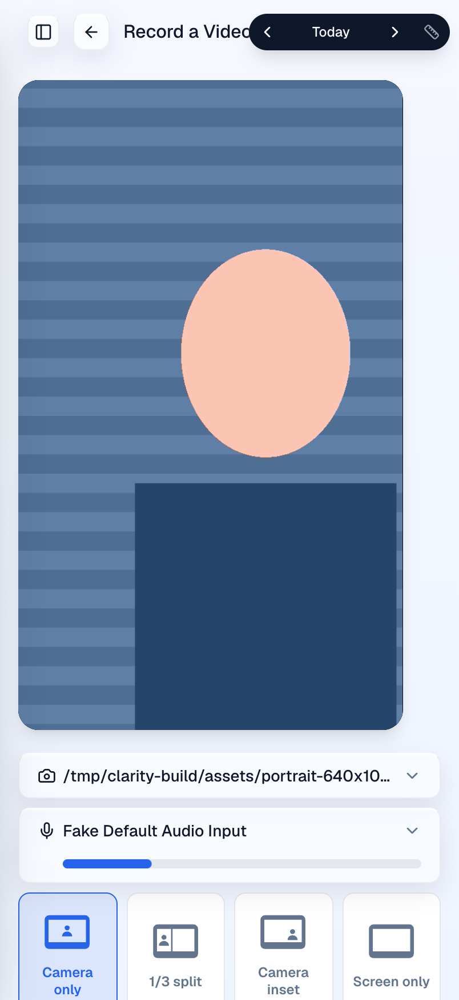
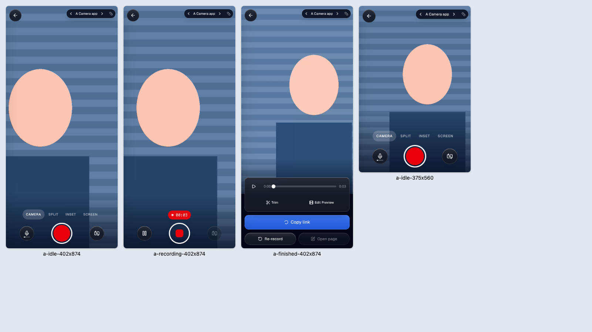
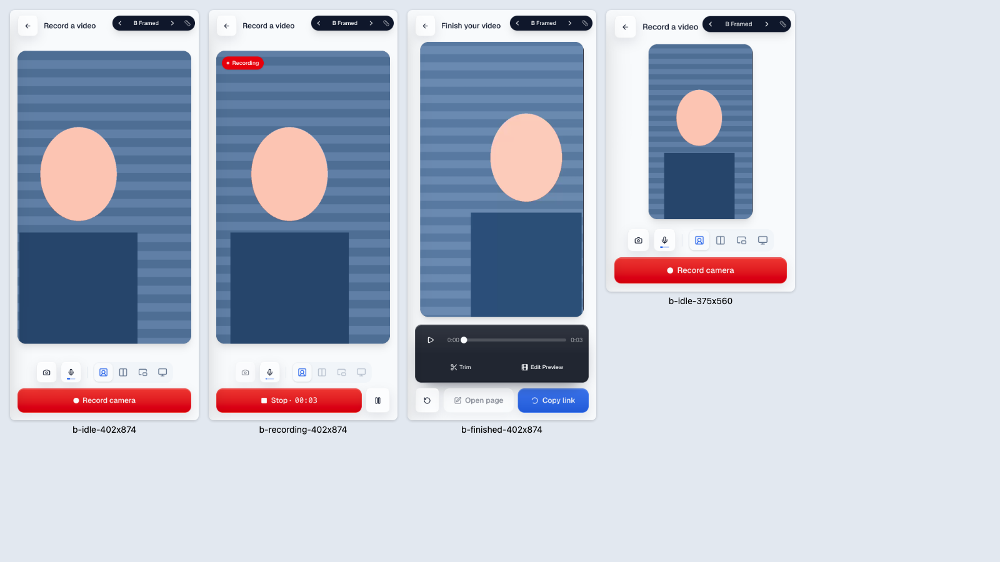
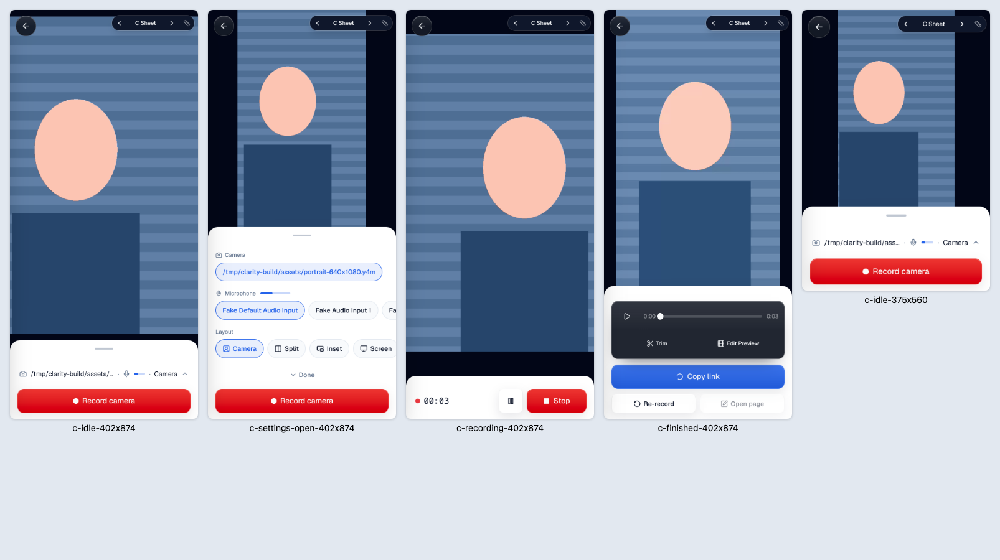
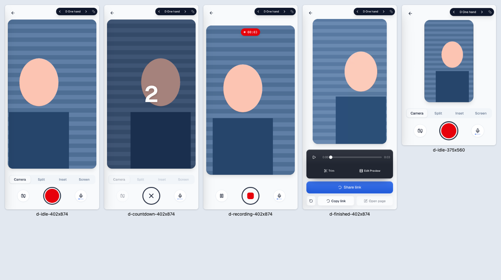
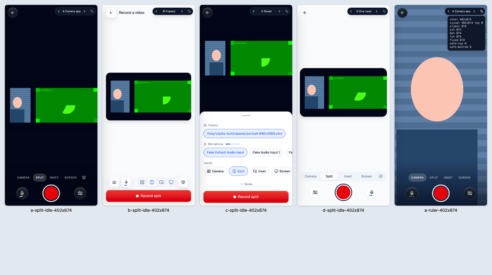

Try them on your phone at pr-1019.clarity-video.workers.dev/record?variant=a. Change the letter, or use the pill at the top right. Each layout records, uploads and finishes for real. The camera here is a synthetic test pattern, shot at 402x874 in Chrome.
The frame sits left, and Record is below the fold.

The camera fills the screen. Round Record in thumb reach, layouts as a row of words, timer next to Stop while recording.

Today's screen made to fit. Centred frame sized to what the controls leave, one row of icon buttons, full-width Record pinned at the bottom.

Full-screen camera over a bottom sheet. Closed, it shows one summary line and Record. Open, it lists cameras, mics and layouts.

Whole frame with every control in a deck below it, a 3-2-1 countdown, and a Share link button that opens the phone's share sheet.

